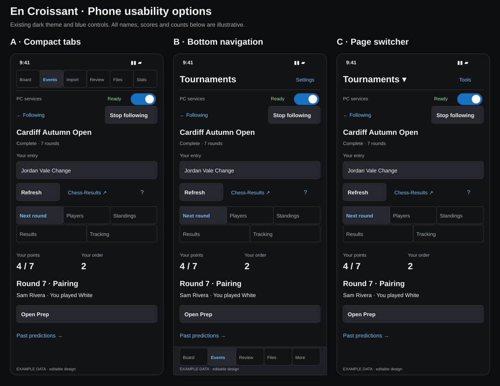

A · Compact tabs
Six familiar pages stay visible. Tools form short rows; settings fold away.
All six pages · Subpages and setup · Loading, errors, settings and confirmations
Editable SVGs. Example names, scores and counts. The owner selected A. The compact layout and Stop following fix are published; the other options remain editable references.

Six familiar pages stay visible. Tools form short rows; settings fold away.
All six pages · Subpages and setup · Loading, errors, settings and confirmations
Four frequent pages sit by your thumb. Import and Stats open from More.
All six pages · Subpages and setup · Loading, errors, settings and confirmations
One page title opens the full page list. More room for each task.
All six pages · Subpages and setup · Loading, errors, settings and confirmations